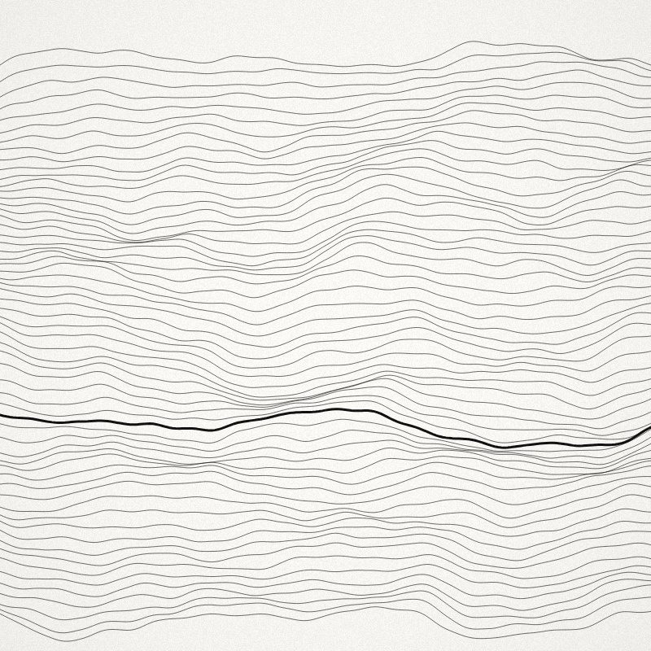
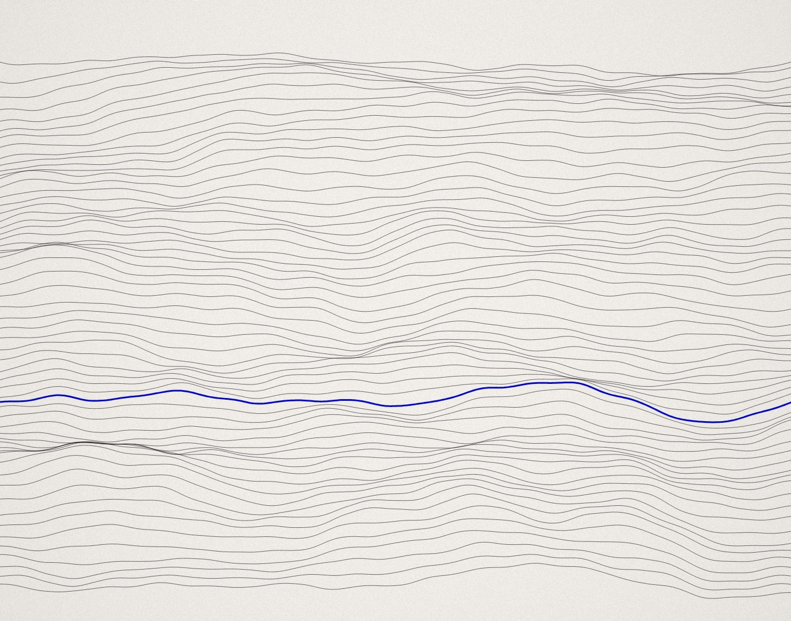

People give up on the first import
Most first attempts fail on date formats; nearly all fall back to typing rows by hand.
14 quotes →New Fieldnote now transcribes interviews that switch between te reo Māori and English. Read the note
Fieldnote records your interviews, finds the themes that run across them, and keeps every insight tied to the moment a customer actually said it.
“I didn’t know I needed it until the third time it happened.”

How it works
Hana · 23:12We tried the import twice. The second time I just gave up and typed the rows in by hand.
Researcher · 23:30What happened the first time?
Hana · 23:41I didn’t know I needed the template until the third time it happened. By then I’d lost an afternoon.
Most first attempts fail on date formats; nearly all fall back to typing rows by hand.
14 quotes →It lives on a help page nobody opens until something has already gone wrong.
9 quotes →Imported rows can’t be traced to the file they came from.
5 quotes →Insight brief · 16 October
Across eighteen interviews, eleven people abandoned their first import and typed their data in by hand. The template that would have prevented it is buried two clicks deep.
Every line links to the moment it was said · 28 quotes attached
Research teams who stopped losing what customers told them
Synthesis agent
The agent drafts themes across every interview in a study, but it never summarises without evidence. Each theme carries its quotes, each quote its timestamp, and every claim can be traced back to the person who made it.

Quotes, not summaries
A summary tells you what a researcher thought. A quote tells you what a customer meant. Fieldnote puts the clip, the words and the context side by side, so the team argues about the customer rather than the notes.
Research library
Studies end; what was learned shouldn’t. Every interview joins a library the whole company can search, so next year’s product team starts from what customers already said instead of asking again.
“We used to finish a study with a deck and a folder of recordings nobody opened again. Now the recordings are the deck.”
Ana Moretti · Head of Research, Halden
No card, no sales call. Bring the recordings you already have.